twinstudio Twin Builder
Note
Work in Progress This section is still under construction. Our keyboards are clacking, our coffee is strong, and the content is on its way. Thanks for your patience!
Twin Creation Wizard
The Creation Wizard helps you to create a digital twin. You can open the Creation Wizard by clicking on the Create New Digital Twin buttons in the catalog or on the dashboard.
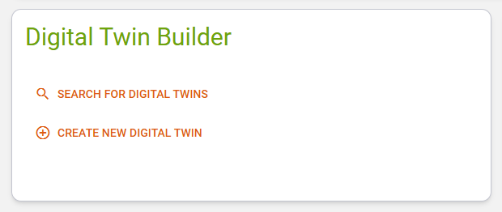
The Creation Wizard offers two options for creating a digital twin.
Step 1 - Basis Selection
Option 1 - New Digital Twin from scratch
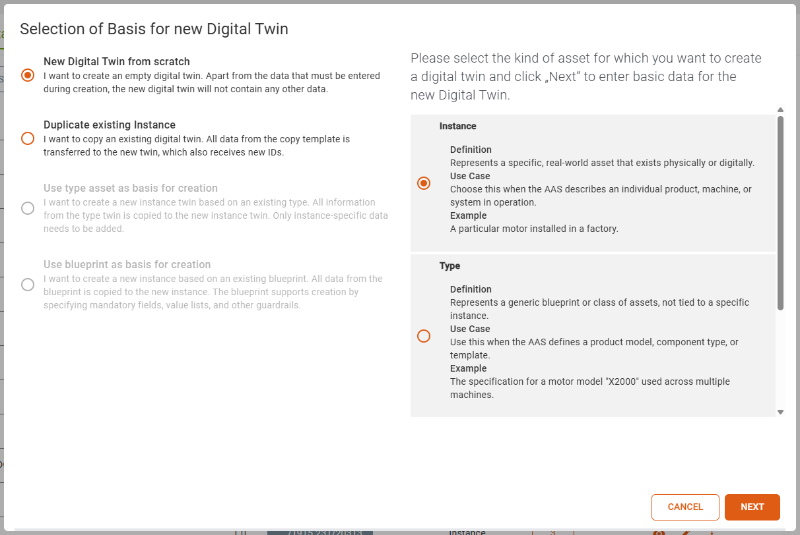
If you create a digital twin from scratch you can choose the asset kind in the right radio button list. If you are unsure which asset kind is appropriate for your situation, the help texts describing the options may be of assistance.
Option 2 - Duplicate existing Instance
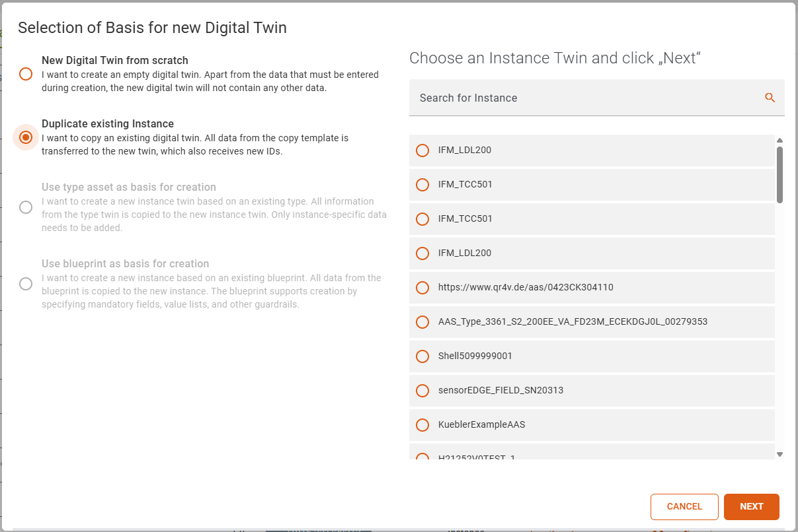
If you duplicate an existing instance you have to choose an instance from the radio button list on the right.
Step 2 - Add Indentification and Basic Information
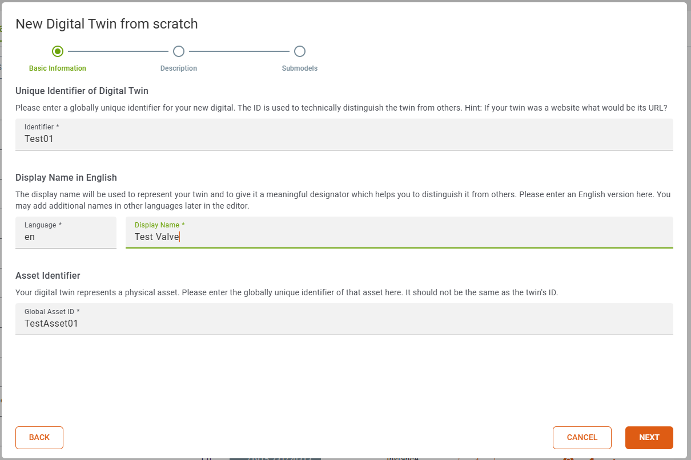
In the second step you have to set an id for the digital twin, add a display name for your twin and refer to your physical asset by adding a asset identifier. The id for the digital twin has to be unique. The asset identifier could be common because you could create many digital twins for one physical asset. The display name is required because it is used to determine the name of the shell in the catalog.
Step 3 - Add Description (optional)
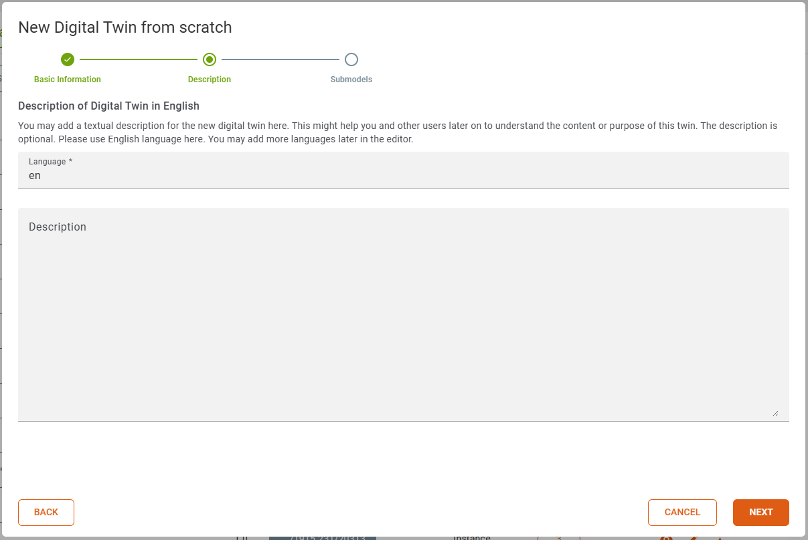
This step in the creation of a digital twin is optional. In this step you can describe the asset and the digital twin.
Step 4 - Adding Submodels (optional)
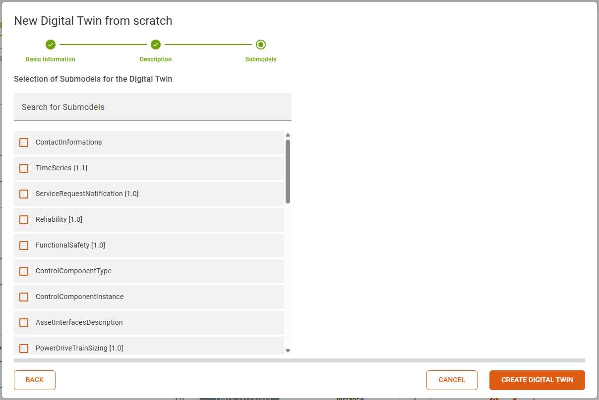
In the last step of the digital twin creation you can add the submodels you need. The submodels you can choose from are submodel templates, which are stored in twinsphere cloud. If you click the Create Digital Twin button every selected submodel template will be transformed into a submodel instance and added to your digital twin.
Edit Shell Properties
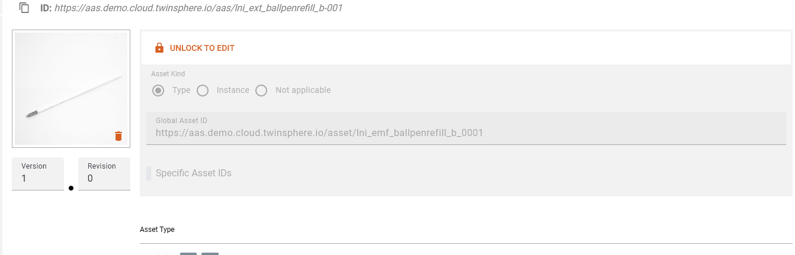
If you want to edit properties (asset kind, global asset id and specific asset ids) of your shell the editing has to be unlocked.
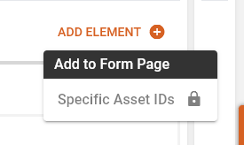
Via the dropdown you can add specific asset ids, if the editing has been enabled.
The asset type of the shell is shown in the row below these properties. If the url points to an existing twin in your current tenant, a link to it will be displayed.
Add/Remove Submodels
The Submodels of your currently opened twin can be edited via the edit submodel button in the top right corner.
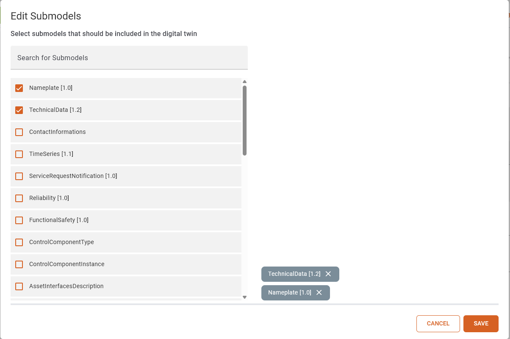
The current submodels of your twin are at the top of the list. The rest of the list contains all available submodel templates from your current tenant. To select the same template multiple times you have to add them one at a time.
If a new submodel template is added it will be converted to a submodel of type instance and its elements are modified to reflect this change.
Add/Remove Submodel Elements
In the navigation list a symbol is displayed in every submodel entry. This states if the template for your submodel has been found in your tenant.
If this is the case you can find the add element button on some of the submodel elements. There are an add to navigation and add to page section.
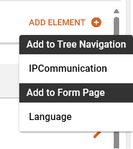
Adding a navigation element will insert a child in the navigation tree. To delete this element you have to visit the node.
Adding an element to the page will cluster similar elements. Next to them there will be a trash can to delete each entry.
Some templates specify a cardinality of one or onetomany then the last element cannot be removed.
Arbitrary Properties
Some templates specify arbitrary properties. At the moment twinstudio only supports editing the first. Twinstudio cannot assume in good faith the correct idShort for additional elements.
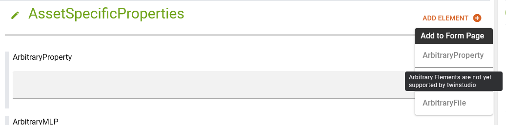
In the add dialog these entries are grayed out and display the info.
Fill-In Submodel Element Values
Properties
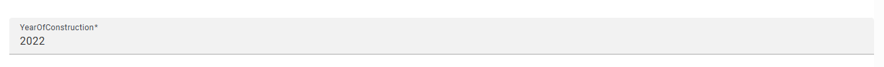
The value of a property is represented by an input field. Please make sure that the data type of the property matches the value you set into the input field. The Validation Issue List will have an issue if the data type of the value does not match the data type of the property.
Multi Language Properties
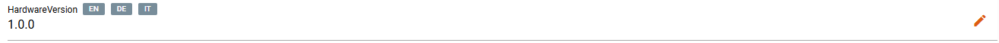
The Multi Language Property displays all languages for which a value is set, with tags above the value. The value displayed in the field is determined as follows using the language property of an entry and match it with (ISO 639-1):
- the data language
- containing the data language
- the ui language
- containing the ui language
- english (en)
- containing english (en)
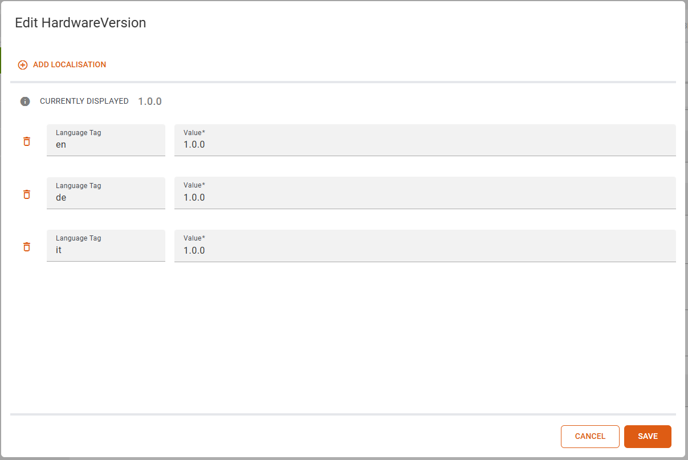
The dialog box that opens when you click on the pencil icon shows all the values that have been set for the Multi Language Property. You can add new values and delete existing ones. Make sure that at least one value is set. At the top, you can see which value will be displayed when you click Save. If you click on the info icon, you will see an explanation of why this value was selected.
File Properties
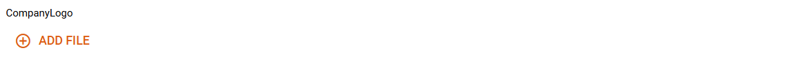
You can fill in the file properties by clicking on the Add File button.
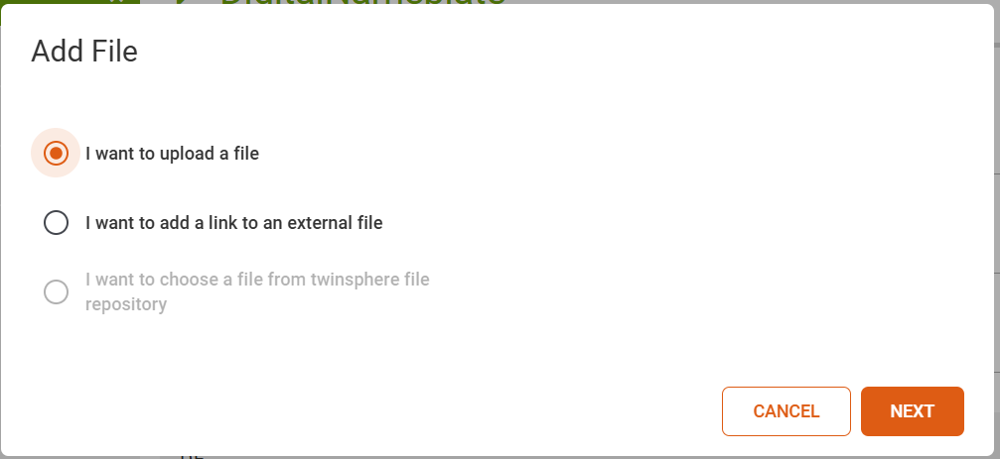
In the dialog box, you can now choose whether you want to upload a file or store an external file. If you upload a file, it will be stored in the twinsphere file storage and a reference will be written to the property. If you store an external file, the link will be stored as a value. If no content type is specified in the template, the content type is set to octet-stream.
Range Properties
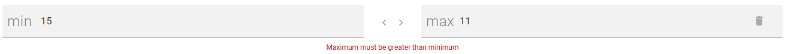
The Range Property can set minimum and maximum as values. If either minimum or maximum is set, the Required Validator is fulfilled. If the data type is a data type that describes a number, it is validated whether the minimum is smaller than the maximum.
Reference Elements
To set the value of a reference element, click the Add Reference button and then select an asset administration shell. You can then refer to a submodel or submodel element and save the reference. The reference is displayed as shown below.
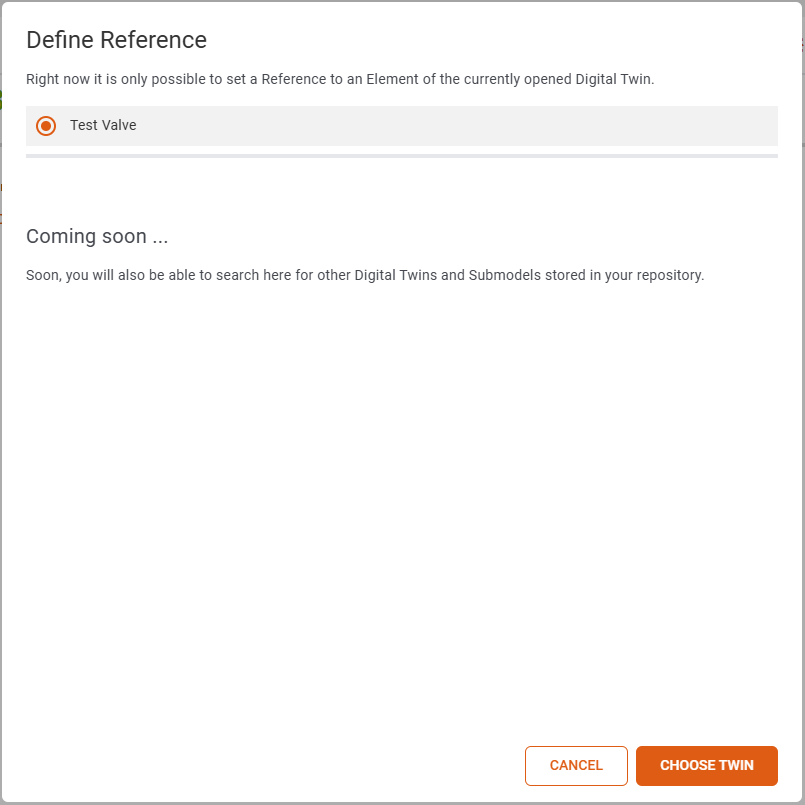
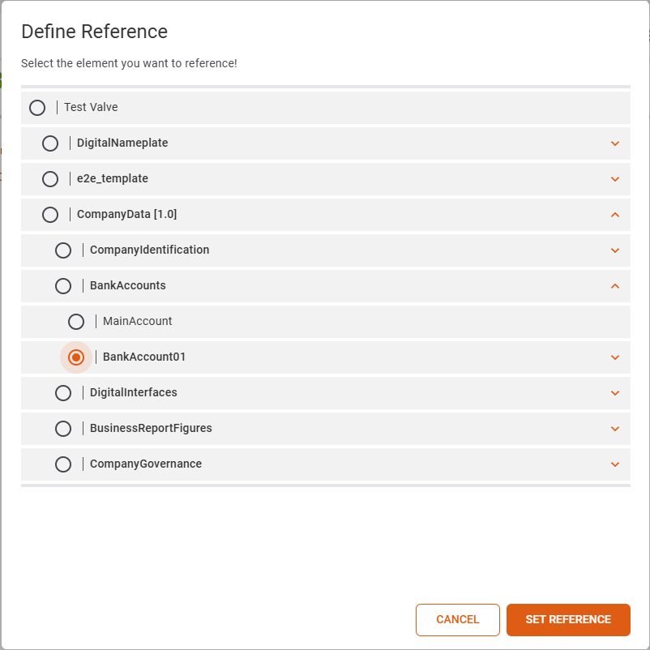
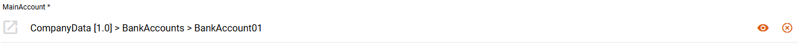
Validation Issue List
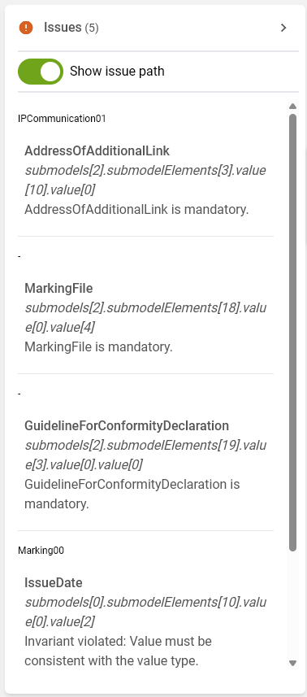
After each value change your twin gets validated. The count of issues will be displayed atop of the list.
The errors are grouped by their path which can be displayed with the show issue path toggle.
Clicking on an issue will navigat you to the element and the edit mode will be opened.
Save Draft
To save a draft, simply click on the Save Draft button. Once saved, a toast message will appear in the upper left corner. Drafts are only visible to you and can only be edited or deleted by you. You can view all your drafts in the draft catalog.
Publish to Repo
To publish a digital twin, all errors in the error list must be corrected. Once all errors have been corrected, the twin can be published by clicking the "Publish" button. Once the twin has been successfully published, a dialog box displays the ID, name, and tenant to which the twin was uploaded. Once the twin has been published, the corresponding draft is deleted from the draft catalog.